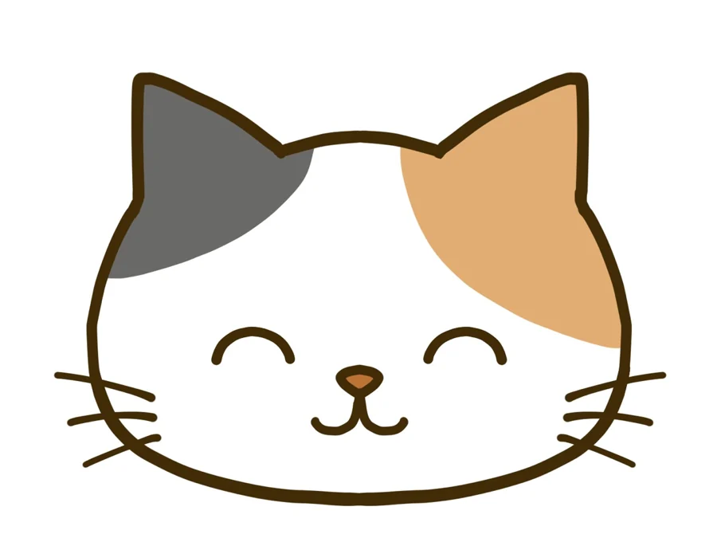

すわっち
優しく柔らかく、親しみやすい癒やし系。
あなた専用AI相談アプリ
毎日の「忘れたくない」も、
誰かに聞いてほしいことも。
ちょっとしたメモから、気軽なおしゃべりや相談まで。あなたが選んだAIパートナーが、毎日に寄り添います。
すわっちが大切にしていること
選べる、わたしのAIパートナー
見た目と話し方の違う4人から、一人ひとりが好きなパートナーを選択。選び直しても、会話履歴やタスクはそのままです。
優しく柔らかく、親しみやすい癒やし系。
明るく上品で、堅すぎないAI秘書。

親しみやすく、少しくだけた猫型AI。
落ち着いた上品な敬語のAI執事。
すわっちが参照するのは、ご本人の設定や許可された履歴、会社が正式に登録した理念・ルールなど、サービス内で定めた範囲です。何でも無制限に記憶するものではありません。
毎日のメモとおしゃべり
仕事だけでなく、買い物や予定、ふと思ったことまで。自分だけのメモと、AIとのおしゃべりを毎日の入口にできます。
買い物や日常の用事も、自分だけのリストへ。
忘れたくない予定を、さっと残せます。
内容を確認し、「登録する」を押したときだけ保存。
未着手・対応中・完了がひと目で分かる。
疑問や気持ちを、カテゴリーを選ばず話せます。
仕事の情報共有や引き継ぎは、共有リストで。
「わたしのやること」と通常の相談本文は本人専用です。「みんなのやること」は仕事用の共有リスト。相談から本人の確認なしにタスクを登録したり、本文を共有欄へ転載したりしません。
経営者のみなさまへ
がんばって伝えているのに、なぜかすれ違う。そんな小さな引っかかりを、話せる形にしていきます。
スタッフに何度も同じことを言っている
仕事を教えてもなかなか伝わらない
スタッフが何を考えているか分からない
注意すると人間関係が悪くなる
社長自身も誰かに相談したい
会社の理念をスタッフに理解してほしい
もっと自主的に動ける会社にしたい
社員同士が認め合える職場を作りたい
すわっちは成果や関係改善を保証するものではありません。対話と振り返りを始めるための補助ツールです。
毎日から、職場づくりまで
仕事の予定も、買い物や日常の用事も。本人だけの忘れ防止メモとして残せます。
ちょっとした疑問、気持ち、仕事や人間関係の悩みまで、ジャンル選択なしで話せます。
仕事の担当・期限・進捗を同じ会社のみんなで確認し、引き継ぎに使えます。
経営者自身も、誰にも言いにくい悩みを話し、必要なときだけ改善案を保存できます。
仕事・人間関係・プライベートに関する話題を含む大まかな傾向を、安全に公開できる場合だけ表示します。心理診断ではありません。
匿名または記名で会社へ意見を送り、匿名のまま返信を受け取れます。
チャットの提案をAIが前向きに整え、承認後に会社の目標として公開します。
良い行動をした仲間へ1ポイント。送り主は一般画面には表示しません。
会社が招待した利用者が、それぞれ自分のキャラクターとテーマを選択。承認済みの理念・業務ルールは共通して参照できます。
登録不要・保存なし
架空会社「こもれび商店」の固定サンプルです。入力内容は送信・保存されず、AI APIや本体データベースにも接続しません。
朝の準備を写真つきチェック表にして、担当者だけでなく全員が完了を確認できる形を試してみましょう。
実際の画面では、相談者を推測できない十分な人数・件数があるときだけ傾向を表示します。
使い終わった道具を元の場所へ戻し、次に使う人がすぐ見つけられる状態をみんなでつくります。
ポイントは、誰が送ったか分からないようになっています。安心して贈ってね♡
一般販売向け無料体験
4日目からは、身近な人を招待できます。
社長を含め最大5名まで。
14日間、すわっちを無料体験できます。
本格導入すると
試用中に作った会社設定や履歴は、そのまま引き継げます。本格導入は運営者の承認後に切り替わり、契約人数に合わせて招待上限を設定します。
※ 利用状況や相談件数によって、分析の精度は異なります。少人数で個人を推測できる統計は表示しません。公開条件を満たした確定週のみ
会社のルールと承認済み情報から
社長自身が記録した事実をもとに
無料体験のお申し込み
応募受付は、安全な送信経路と正式な問い合わせ先を準備してから開始します。営業サイトから会社が自動登録されたり、課金が始まったりすることはありません。
現在、この公開ページから個人情報は送信・保存されません。受付開始時には利用目的と取り扱いを明示し、必要な同意を確認します。
安全な受付経路と正式な問い合わせ先を確認中です。準備が整うまで、このページで会社名・氏名・メールアドレスなどを入力・送信することはありません。
安心して使うために
固定サンプルだけで動作し、入力を送信・保存しません。本体の相談データには接続しません。
今回は公開しません。この営業サイトには認証・相談履歴・会社情報を含めていません。
現在は受付準備中です。この公開ページから個人情報を送信・保存する機能はありません。
公開前に、プライバシーポリシー・利用規約・問い合わせ先の正式版について専門家確認が必要です。